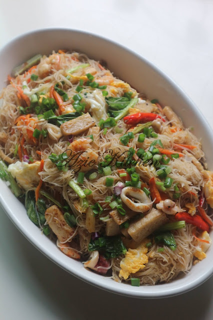
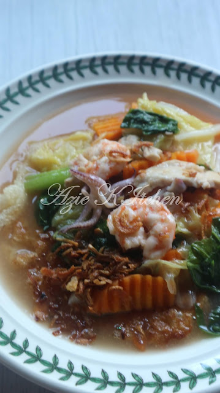
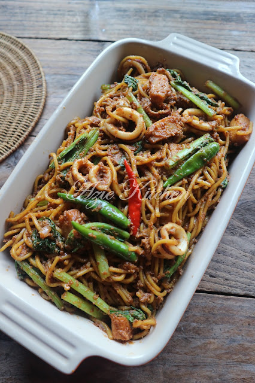
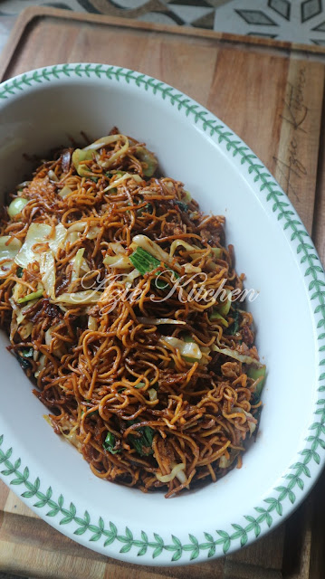

Mee Hoon Goreng Putih
Tak guna cili kering, hanya guna serbuk lada hitam untuk memberi perasa pedas dan perisa, ia lebih mudah dan cepat.

Kuey Teow Kungfu
Boleh memeriahkan dengan pelbagai jenis lauk seperti udang, sotong, ayam, daging dan juga telur. Buat sendiri lagi sedap.

Mee Goreng Basah
Walaupun dah sejuk, tapi masih lembut dan masih sedap. Kalau makan mee goreng, wajib ada untuk rasa lebih sedap ialah limau nipis. Perah dan kacau rata rata.

Yee Mee Goreng
Wika menggoreng yee mee, lebih sedap jika dilebihkan kicap lagi pulak warnanya akan nampak lebih menyelerakan.
ABOUT US
POPULAR TAGS
Mee Bandung
Mee Hailam
Kuey Teow
Mee Hoon
Sup Tulang
Soto Ayam
Mee Kari
Aneka Mee
Maggie Goreng
Goreng Basah
Laksa
Yee Mee